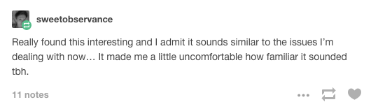

I dislike the identity-based, power-decreasing, exhibitionist toxoplasma that comes with short-form arguments on the internet, but pretending that people don’t read this blog has moved from a valid coping mechanism to outright denial.
Depression certainly involves a tendency to have hopeless, negative cognitions in a way that CBT can often fix. I find it odd to think of this as “the cause of” depression in a way comparable to the other hypotheses raised. You still have to explain why somebody would have intermittent six month episodes of hopeless, negative cognitions in the middle of an otherwise normal-cognition life.
“Cause” is a tricky word. Ultimately, depression is a chemical imbalance. Traumatic brain injuries can induce such an imbalance, as can uncontrolled inflammation. But for most people, the bad chemicals of depression are secondary to bad thought loops. If you pull a Book of Job on someone, then depression is likely no matter how plucky the neurotransmitters in question.
It is perhaps helpful to think of depression as an action potential. A few negative thoughts, and you feel bad, binge-watch Gossip Girl, and feel better the next day. If you get enough negative thoughts, however, then you pass a threshold and get trapped in a feedback loop: negative thoughts make you feel awful, feeling awful triggers more negative thoughts, and you exponentially fall apart.
SSC describes somebody who has “intermittent six month episodes of hopeless, negative cognitions in the middle of an otherwise normal-cognition life.” I would argue that this person’s “normal-cognition” periods feature plenty of negative thoughts, but not quite enough to reach threshold and trigger the feedback loop of true depression.
On a more optimistic note, this works in reverse. It’s extremely difficult to reach the threshold of “feeling hopeful” when clinically depressed, but once you reach this threshold, good things lead to more good things.
The idea of LSD/psilocybin/ketamine as a reset switch is interesting but I don’t think supported (not disproven, just not really looked into), and there do seem to be permanent (even lifetime!) effects of psychedelic use.
Yes, there are permanent sequelae of psychedelic use. (The word “rewiring” comes to mind.) However, I don’t think that these long-term effects are neuroprotective against depression. The short-term “reset” may help, but tolerance is a mother, so prescribe “acid Q6months” at your own peril.
I’m not sure whether the gender difference theory + this theory would imply that men recover from mental illness more than women - something that I don’t think anyone’s noticed.
I don’t think men recover more. Women are the ones “talking about mental health”, but men are no less skilled at constructing identity. Check out /r9k/, The Worst Place On The Internet: even if the (anonymous, male) users don’t explicitly mention depression/anxiety, they spend a tremendous amount of time identifying as “beta”, “NEET”, etc. This is toxic.
Not sure I agree with the perception of SSRIs/tricyclics as “just numbing people’s feelings”. First of all, a lot of people’s depression is best described as total inability to feel any emotions at all, good or bad, and antidepressants can treat that and make people feel more emotions. Second, only a fraction (probably less than ½) of people get the emotional blunting effect.
Fair point, and it’s possible that I’m typical-mind-fallacying this one. However, quoth the Wikipedia article on anhedonia: “Results indicate that emptiness is negligibly related to boredom, is closely related to feeling hopeless, pathologically lonely, and isolated, and is a robust predictor of depression and suicidal ideation (but not anxiety or suicide attempts).” To me, this indicates that “feeling empty” is still a feeling, which (thus) resolves with SSRIs.
I also don’t believe that <50% of people have emotional blunting. Rather, that many people complain about emotional blunting. A little emotional blunting ain’t bad; a bipolar woman recently told me (re: Depakote), that “I still feel the highs and the lows, I just don’t find them overwhelming.” With low-dose numbing, you just lose the extremes, e.g. depression, but I am confident that given a sufficiently high dose of Zoloft, basically anyone will have dampened emotions.
Although they praise Ozy and are suitably superficially respectful throughout, I still think analyzing their personal psychology crossed a really big line unless they got permission first. Especially since many of the quotes quoted were meant in a hyperbolic or performative nonliteral manner. I am updating towards everyone else’s concerns about assholery.
First: yes, I am an asshole. My squad’s stated goal is world domination; it says “LE” at the top of my character sheet; I scowl at puppies when I pass them on the sidewalk. Hotel Concierge: a blog for villains and villain-associates.
Second: I’m sure that many of Ozy’s quotes were performative, but that doesn’t mean they aren’t telling. Performance = ½ what you want to say, ½ what you think the audience wants to hear; hyperbole is “entertaining”, fits the latter category and gives you plausible deniability for the former. I am criticizing the character of ozymandias271, regardless of whether that person is real. In other words: You can pretend to be anyone on the internet—why did you choose this?
Third: That said, Ozy, I am deeply sorry if my essay caused you harm. I tried to criticize your worldview without maligning you as a “bad person”, but this is a difficult line to walk. Some of the quotes I used were perhaps too personal for critique. In the future, I will be more careful.
Fourth: I don’t see a way to talk about individual psychology without talking about individuals.
Bear with me for a second. I know many people in the rationalist community and elsewhere, who, despite being well-read, despite being much smart and well-spoken, make stupid, basic mistakes about how to be a human being. They don’t get dates, they get addicted to drugs, they come up with elaborate theories about how everyone else is the problem. I know people with sophisticated knowledge of politics and altruism who are pricks in day to day life.
I know many people who get the big picture and mess up the details.
Slate Star Codex has a fantastic knowledge of the underlying math of the universe, and his mission statement—“get people to cooperate in the prisoner’s dilemma”—is one I would endorse, except, you know, villainy.
But I think most people have been told “don’t be a dick” at one point in their lives. It’s the subtle frustrations of how to do this—how to be powerful and stay a decent person—that stymie people. If you want to advise people on how to face these challenges, then you have to talk about people who are facing these challenges, and you have to hit the details.

Probably the safest way to talk about the “details of individual psychology” is through fiction. I like fiction, and that’s where I’ll end up, probably.
But I have a few things to say about the real world first.
(cw: discussion of racism, sexism, hipsters, nerds, punks, posers. Don’t read unless you’re willing to be offended.)
(numbers surrounded by [ ] are footnotes, scroll to the bottom.)
I.
Here are some buzzwords courtesy of The Unbearable Whiteness of Indie, written by Sarah Sahim, guest writer for Pitchfork, a subsidiary of Condé Nast:
In indie rock, white is the norm. While indie rock and the DIY underground, historically, have been proud to disassociate themselves from popular culture, there is no divorcing a predominantly white scene from systemic ideals ingrained in white Western culture. That status quo creates a barrier in terms of both the sanctioned participation of artists of color and the amount of respect afforded them, all of which sets people of color up to forever be seen as interlopers and outsiders.
Sahim, who is Indian-American, complains that she can “count on one hand the prominent performers in the independent scene that look like me”, which isn’t that surprising, given that only 1% of the U.S. population has her ethnicity [1]. She criticizes the “blinding whiteness” of Belle and Sebastian’s indie film, God Help The Girl, a film that is set in Scotland, which is 96% white. She also blames the white mainstream for labeling Das Racist as “joke rap.” She has a point: how could anyone hear “Combination Pizza Hut and Taco Bell” as anything but an urgent political statement?
But these poorly-chosen examples don’t disprove her thesis: that indie music culture, intentionally or otherwise, excludes people of color. In which case, we (“Pitchfork readers”) should fight this tendency and encourage minority indie rock artists. I think that everyone should have the right to rip-off Built To Spill, but let’s be clear: Sahim is arguing in favor ofcultural appropriation.
Cultural appropriation is when somebody adopts aspects of a culture that’s not their own. (everdayfeminism.com)
The pioneers of indie rock (The Smiths, Joy Division, Sonic Youth, etc.) were almost exclusively pale, skinny dudes who liked a good cry now and then; indie rock is whiter than eating sushi after yoga and complaining about white people. You can redefine the dictionary to get around this:
A deeper understanding of cultural appropriation also refers to a particular power dynamicin which members of a dominant culture take elements from a culture of people who have been systematically oppressed by that dominant group.
but a) the definitions of dominant, systemic, oppressed, etc, are subjective and prone to political warping; b) the idea of a single “dominant group” is laughable, congress can’t pass a goddamn bill; and c) I contend that, regardless of the underlying power dynamic, all instances of “cultural appropriation” occur for similar reasons and have similar effects. #Thesis Statement = individuals vary, groups are pretty much the same.
So.
Sahim is far from the only liberal to be pro-appropriation. Do you remember all the articles about how programming culture discourages women? Aghast at the lack of female TV writers? What about the outrage at insular video gamers? “We need to get women into this culture of straight men!” How about this article criticizing Her for giving minorities only 40 seconds of dialogue? (Note: Her is a movie about a mustachioed hipster falling in love with an Apple product.) Heems and Kool A.D, the two rappers in Das Racist, have Indian and Italian/Afro-Cuban heritage respectively. The only way they aren’t appropriating is if you consider all minorities to be the same, which, um, seems kind of racist.
At the same time, the social justice movement is vehemently against cultural appropriation when other people do it. See, for example, this article, which criticizes Katy Perry for being “trap-influenced”, Justin Timberlake for “ripping the style of R&B”, and unnamed “post-Disney stars” for “copping the language of hip hop.” (It is perhaps noteworthy that these are all mainstream pop artists that Pitchfork’s hipster audience wouldn’t like anyway.)
Don’t get me wrong, sometimes the targets of FIGHT––>CULTURAL APPROPRIATION totally deserve the hate. Miley’s twerking black back-up dancers are offensive, and I don’t condone wearing an Indian headdress while getting wine drunk with Tri-Delta on Halloween. But the problem isn’t that The Artist Formerly Known As Hannah is appropriating culture, the problem is that she isn’t. Black booty dancers are not black culture, they are a white stereotype of black culture. Minstrelsy isn’t offensive because it steals culture, it’s offensive because it’s a mockery of culture: it’s not appropriation, it’s just racism. Compare: no cares about white people playing jazz.
And lest I come down too hard on social justice, let us note that the “other side”—say, Men’s Rights Activists—has the same hypocrisy and 1000 times the insanity. From a review of Mad Max: Fury Road:
The real issue is not whether feminism has infiltrated and co-opted Hollywood, ruining nearly every potentially-good action flick with a forced female character or an unnecessary romance sub-plot to eek out that extra 3 million in female attendees.
It has.
It’s whether men in America and around the world are going to be duped by explosions, fire tornadoes, and desert raiders into seeing what is guaranteed to be nothing more than feminist propaganda, while at the same time being insulted AND tricked into viewing a piece of American culture ruined and rewritten right in front of their very eyes.
This meninist, who is going to have a stroke if he doesn’t get his blood pressure under control, has written a fiery polemic against cultural appropriation. I know, right? Politics is weird.
Recently, I saw a photo of graffiti that said “RICH KIDS KIDNAPPED STREET CULTURE.” Here’s the thing: it is impossible to kidnap culture. Culture is an idea—the set of symbols and values shared by a group. It is as impossible to steal culture as it is to steal the number 6 or the concept of schadenfreude. Someone can copy your culture, mock it, attack it, but they can’t steal it, because you still have it. In Sahim’s Pitchfork essay, she digresses from her pro-appropriation argument to say:
White art additionally dilutes and flattens aspects of other cultures’ music that it adopts in the process of making them more “accessible” for those whose curiosity does not extend beyond the parameters of Europe and North America.
Which, if I’m reading correctly, means: “ughhhh, white people are sobasic.”
It seems to me that “appropriation” is more-or-less synonymous with “being a casual”, that most casuals are recent, say, “cultural immigrants,” and that anger at casuals/noobs/posers/cultural immigrants is common if not universal. And so for the next chunk of this essay I want to work on finding a general rule: do cultural immigrants actually harm the culture they’re joining? Can we stop cultural immigration? Should we stop cultural immigration? Why the fuck does anyone care about posers?
II.
Left unchecked, the casuals will always win. Blame the math.
Let’s pretend the above plot describes the population distribution of “interest in punk rock.” People around zero have average interest; the further to the right you are, the more spikes per cm^2 of clothing.
From this group, who is most likely to found a new culture? The 0.1%, the hardcore kids—they spend the most time looking for novelty, they are the fringe of the culture = most isolated = most desperate for similar minds. A culture is thus founded by a small group of individuals with high levels of interest relative to the general population.
Who is going to join this new culture?
The most casual people that the culture’s definition allows. If the culture is defined as “people who go to punk rock shows”, then most newcomers will be, “people who went to Warped Tour once and moshed to Asking Alexandria.” Why? Because there are more of them. If the culture is defined as “people who believe in the DIY aesthetic,” then most newcomers will be, “people who once pinned an anarchy symbol to an army surplus jacket.” Why? Because there are more of them. And if the culture is defined as “people who are straight edge anti-capitalist vegans”, then most newcomers will be teenagers who have worn those labels for all of six months. Why? Because there are more of them.
As the posers arrive and become a majority, the culture’s definition will change. “I’m not that hardcore, but most of the people here listen to Green Day, so whatever.” And so the next wave will be even more poser-ish, until New Culture is entirely swallowed by Old. Nerds used to look like this, now nerds look like The Avengers grossing $1.5 billion, the lumberjack aesthetic has spread like mono, and hip-hop, bad news, but you are now the soundtrack to junior high prom. No matter how you define your culture of equals, it will return to a normal distribution of mainstream vs. fringe [2]. The fringe kids don’t have to be disliked, they don’t have to be low-status, but they are necessarily different, and they are aware of this. High school is a stable Nash equilibrium for human civilization, sorry if you don’t like The Breakfast Club.
It’s understandable, then, that cultural veterans try to fight immigration. Sarah Sahim complains that white artists “dilute and flatten” authentic brown art as they make it accessible for the mainstream; swap a few adjectives and the people behind Gamergate are saying the same thing. These conflicts are everywhere. Society is a collection of cultures forming, growing, budding off, swallowing, growing, budding off, swallowing, agar.io forever.
One hundred years from now, there will still be graffiti: “DIGITAL BRAINS KIDNAPPED CYBORG CULTURE.” It’s wrong, but you can’t blame whomever wrote it. Being a minority sucks. It sucks because of the thousand virulent strains of racism and sexism and discrimination, yes, but it sucked before those things existed and it will continue to suck after they are gone. Being a minority sucks because being different—and being constantly reminded that you are different—is alienating. The Doors, by way of Das Racist: People are strange, when you’re a stranger / faces look ugly, when you’re alone.
III.
Let’s switch sides: maybe casuals are bad, and we should stop them.
Except—who are these fiends who dare immigrate to a new culture?
When the fringe kids leave, the label just moves down the population. The people who were once 2.5 SD above the mean become the new weirdos, and when they emigrate, they will be every bit as genuine in their desire to find like minds and be understood.
Yes, this is simplified model. Yes, in the real world not everyone >3 SD vanishes at once. The pattern holds true.
Imagine a suburban white kid who gets invested in hip hop culture. Is he one of the cool kids? No way, this is a kid who feels lonely, horny, frustrated for reasons that he can’t describe, who listens to Immortal Technique and rejects the “superficiality of the mainstream” and carves letters in the bathroom stall with a ninja star. Think about one of the much-maligned “gamer girls” who gets into cosplay. Is she one of the cool girls? Hell no, cosplay isn’t and never will be cool (= pretending to be someone else = not “authentic”), in fact, that’s why she’s doing it, that’s why she has all those kawaii verbal tics and sends text messages with :P’s, because she wants to signal that she doesn’t fit in, that she believes in something better, something fantastical, and she wants to find people like her. Or, if we think VERY CHARITABLY about Sarah Sahim:
It’s an ethical tragedy of the commons: if immigration is unrestricted, the culture collapses, but the act of telling any one immigrant, “sorry, you can’t join” is hurtful and unjust [3].
So what’s the solution?
Poserification has been exacerbated by the internet age. A local punk scene/videogame club won’t have a mass influx of immigrants, because a) not that many people will have heard of it, b) it requires physical effort to join. There is safety in obscurity; the internet devours obscurity.
But just as importantly, the internet facilitates grouping based on shared beliefs, rather than shared action. (Totally unrelated, but, uh, remember to like and subscribe.) Communities of musicians hold up better than communities of music fans: pentatonic scales are objective, the best Radiohead album is a matter of some debate (among people who don’t know that it’s OK Computer). Similarly, skill-based video game communities tend to be quite welcoming: you can’t casual-ify the inputs for Shoryuken. And, anecdotally, communities who act politically—right or left—have far less infighting than those that work through reblogs and labels.
The best solution, I think, is to have borders just strong enough to keep immigration from going neoplastic. When immigration is slow, new members have time to assimilate, to learn the jargon, to grow into the culture rather than pulling it down. There will still be a normal distribution (see footnote 2), but if immigration = emigration, then group size will remain small, and members will have fairly similar levels of interest. I don’t see an easy solution, but if someone wants to play with the details and figure out a niche differentiation model, I’m all for it.
In the meantime, I’d be very skeptical of any club that will have you as a member.
IV.
Recently, a few dozen White Student Union pages sprung up on Facebook, which claimed to present “safe spaces where students of European descent (and allies) are free to celebrate and talk about their European heritage.” These pages may have originated as hoaxes by 4chan white supremacists; doesn’t matter, bait was taken, it was demanded that someone these groups down, and many of them shortly were.
This is an old, old argument. The pro-WSU argument is, “If other cultures have student unions and ‘safe spaces’, why shouldn’t white people?”, to which the counterargument is, “Most student groups are already white; any group that defines itself by whiteness is going to attract racist people”, to which the countercounterargument is, “Even if these groups are racist, they have a 1st Amendment right to assemble”, to which the countercountercounterargument is, “The 1st Amendment protects your speech from government censorship; a private university has no obligation to aid and abet racism,” to which the countercountercountercounterargument is, “The concept of ‘free speech’ has value outside of the legal framework, and infringements against it for the ‘public good’ should be rare and carefully considered,” etc, etc, until all parties reach an understanding that different people place different values on Autonomy and Beneficence and everyone goes home to read John Stuart Mill. Just kidding! They fire off a few buzzwords and go back to their regularly scheduled feelings of self-righteous impotence. “The world sucks, but what can you do? Some people just won’t listen.” I know, right?
Here’s a more interesting argument: given that White Student Unions attract racist people, will banning them make people less racist?
I doubt it. The WSU admins claim that they feel “marginalized on campus,” then say:
We stand for the right of our black brothers and sisters to create a safe space at UCSB to celebrate and promote African cultures. All we want is to be able to do the same. Is this too much to ask?
If a swing voter sees this post and then sees the page get promptly shut down, he has good reason to believe that the WSU people are exactly right. “We can’t even have a Facebook page? The liberals really do run the media.”
“It’s worth it,” you say, “if it gets rid of a racism on campus.” Sure, except that won’t happen. Having an official presence gives the WSU an obligation to be reasonable—if you want to sit at the grown-ups table, you have to be polite. Think about the model. Who is scarier: the Republican party, or the individual voters? The White Student Unions may be racist and reprehensible, but they are amateurs, and as groups they are harmless. When you split these groups up, you are going against regression to the mean: you are turning a boring student union into a bunch of isolated, unpredictable radicals.
I’m not convinced that this makes anyone safer.
V.
So far, we’ve defined cultures based on political ideology, musical taste, etc. What about the fundamentals? What if a culture selects for “niceness”?
Nice people prefer to be around other nice people. Thing is, assholes also prefer to be around nice people. (Why wouldn’t you want to be around people who will listen to your problems?) So if the top 0.1% of nice people split off to form a utopia, some slightly-less nice people will follow them, and some even-less nice people will follow them, and eventually Old Culture and New Culture will have the same level of niceness, at which point immigration will stop. Faking is easy, yes, but note that the assholes don’t even have to fake niceness—all they have to do is wait until they’re about as nice as everyone else.
Let’s make one last change to our model. In the real world, people have more than one community to choose from, and they evaluate each community with regard to multiple different traits. For example, nearly everyone would prefer that other people follow the Scout’s Law: trustworthy, loyal, friendly, helpful, courteous…
So when Sarah Sahim tries to join a culture, she looks at each one’s average trustworthiness, and finds that every single culture in the world has the exact same trustworthiness. If they didn’t, someone would have already moved to take advantage.
Next, Sarah looks at loyalty, and finds that every single culture in the world is equally loyal. Equally friendly, equally helpful, equally courteous…
And so on.
This is a simplified model, but—it is nearly impossible to select for the broad positive traits that everyone likes. The best you can do is select for details, differences: politics, race, preference for one type of indie rock over another.
Because you cannot select for these big positive traits, because these traits will have a normal distribution in each group, there will be more intragroup variation than intergroup variation.
Pause before writing off all members of a group as villainous. Do not assume that all members of your tribe are pure.
You are more than your identity.
[1]. Accusations of “industry X is whitewashed” often make this mistake.
Of those characters coded for race/ethnicity across 100 top films of 2014, 73.1% were White,
4.9% were Hispanic/Latino, 12.5% were Black, 5.3% were Asian, 2.9% were Middle Eastern, <1% were American
Indian/Alaskan Native or Native Hawaiian/Pacific Islander, and 1.2% were from “other” racial and/or ethnic
groupings. (Source)
I am pro-diversity, but you have to consider the baseline prevalence: 63.7% of the U.S. is Caucasian. If actors/actresses were picked from the phone book, there would still be a significant white majority. Now, imagine that you’re a Paramount exec, trying to decide how to cast Avatar: The Last Airbender. Your surveys tell you that moviegoers strongly prefer films in which they have the same race as the main character—in fact, they almost exclusively go to those films. What percentage of your movies should have white leads? Answer: 100%. If you want to target the largest audience, you should always pander to the majority. In the real world, there are other considerations (market saturation, etc), but the principle stands: capitalism leads to racist outcomes with or without racist beliefs.
[2]. Of course, this happens to walled-off communities as well. Suppose that the members of a group randomly get between -10 and 10 Interest Points each month. Over the course of a year, some people will get only positives, some will get only negatives, and most will be in between —> normal distribution. But immigration hastens this process + places the founder population on the far right of the curve, and this makes immigration especially unpopular.
[3]. This is an essay about cultural immigration, not crossing-the-border immigration. Are they analogous? Not really. (Some) conservatives argue that, say, poor Mexican immigrants will “dilute American culture”, but this incorrectly presumes there is a single “American culture.” There is a NRA Conservative culture, a Techie Objectivist Libertarian culture, a Middle-Aged NPR Liberal culture, a College-Age Social Justice culture—andnone of these will involve impoverished Mexican immigrants. If they aren’t going to participate in any of these, how could they dilute them? A more realistic concern is that Mexican immigrants will complicate Mexican-American identity; however, I don’t think this is a problem best solved by walls and/or guns.
{kind=link}